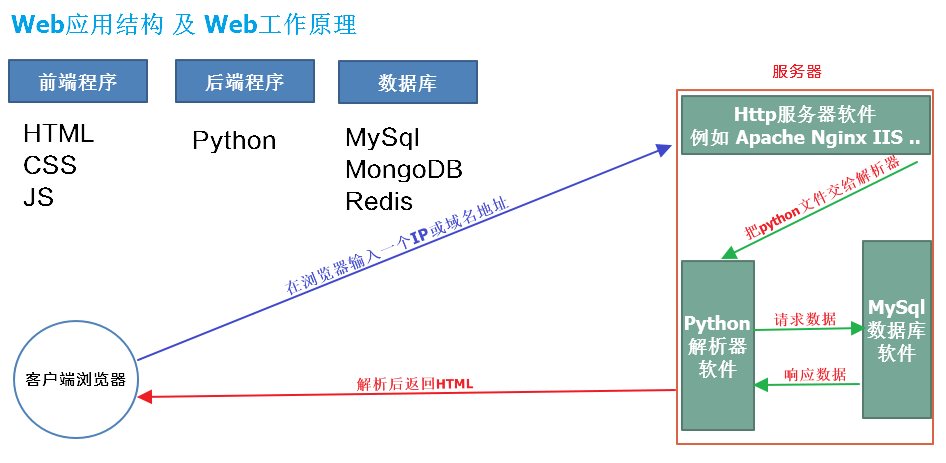
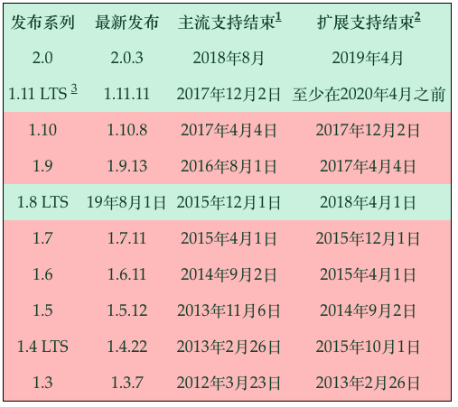

2.1 Django框架介绍与安装
(1). Web开发介绍：
- 目前Web开发属于Browser/Server模式，简称BS架构，开发语言有（Python、PHP、Java ...）。
- 基于Python的Web工作原理如下：

(2). 框架介绍：
①. 什么是框架?
- 软件框架就是为实现或完成某种软件开发时,提供了一些基础的软件产品,
- 框架的功能类似于
基础设施,提供并实现最为基础的软件架构和体系 - 通常情况下我们依据框架来实现更为复杂的业务程序开发
- 二个字,框架就是程序的
骨架
②. 框架的优缺点
- 可重用
- 成熟,稳健
- 易扩展、易维护
③. Python中常见的框架
- 大包大揽 Django 被官方称之为完美主义者的Web框架。
- 力求精简 web.py和Tornado
- 新生代微框架 Flask和Bottle
④. Web框架中的一些概念
MVC
- 大部分开发语言中都有MVC框架
- MVC框架的核心思想是：解耦
- 降低各功能模块之间的耦合性，方便变更，更容易重构代码，最大程度上实现代码的重用
- m表示model，主要用于对数据库层的封装
- v表示view，用于向用户展示结果
- c表示controller，是核心，用于处理请求、获取数据、返回结果
MVT
- Django是一款python的web开发框架
- 与MVC有所不同，属于MVT框架
- m表示model，负责与数据库交互
- v表示view，是核心，负责接收请求、获取数据、返回结果
- t表示template，负责呈现内容到浏览器
(3). Django框架介绍
- Django是一个高级的Python Web框架，它鼓励快速开发和清洁，务实的设计。
- 由经验丰富的开发人员构建，它负责Web开发的许多麻烦，因此您可以专注于编写应用程序，而无需重新创建轮子。
- 它是免费的和开源的。
- 被官方称之为完美主义者的Web框架。
Django可以更快地构建更好的Web应用程序并减少代码。
① Django框架的特点：
- 快速开发：Django的宗旨在于帮助开发人员快速从概念到完成应用程序。
- 安全可靠：Django认真对待安全性，帮助开发人员避免许多常见的安全错误。
- 超可伸缩性：Web上的一些最繁忙的网站利用了Django快速灵活扩展的能力。
② Django可以使用什么Python版本？
| Django版本 | Python版本 |
|---|---|
| 1.8 | 2.7，3.2（直到2016年底），3.3, 3.4, 3.5 |
| 1.9, 1.10 | 2.7, 3.4, 3.5 |
| 1.11 | 2.7 , 3.4 , 3.5 , 3.6 |
| 2.0 | 3.5+ |
- Django的开发版本


(3). Django的安装
- 作为Python Web框架，Django需要Python，在安装Python同时需要安装pip。
在线安装Django,指定版本安装，目前1.11的最新版为1.11.11
pip install django==1.11.11
#默认会安装：Django==1.11.11 和 pytz==2018.3
检测当前是否安装Django及版本
python -m django --version
1.11.11
# 我们也可以先下载安装包：pip download django=1.11.11 -d ./
# 指定安装包安装：pip install Django-1.11.11-py2.py3-none-any.whl